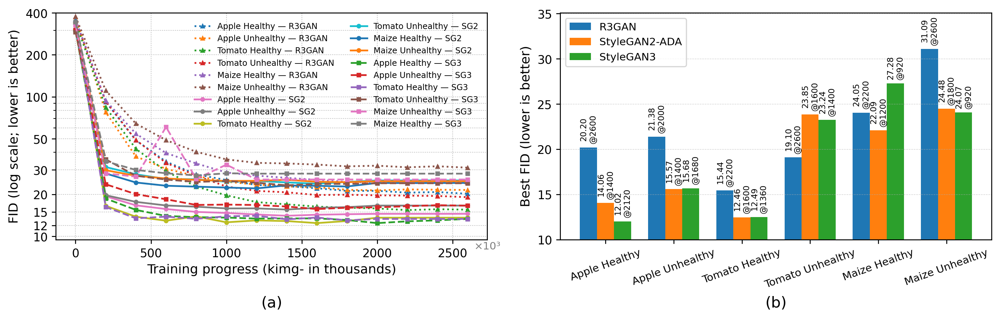
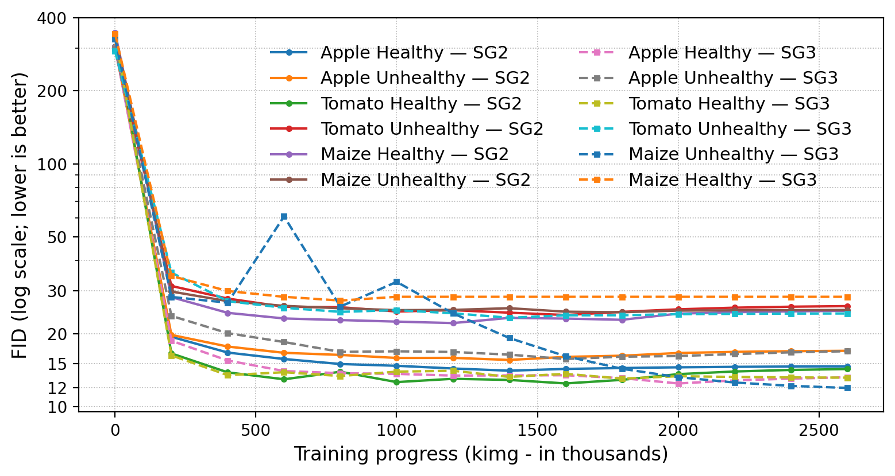
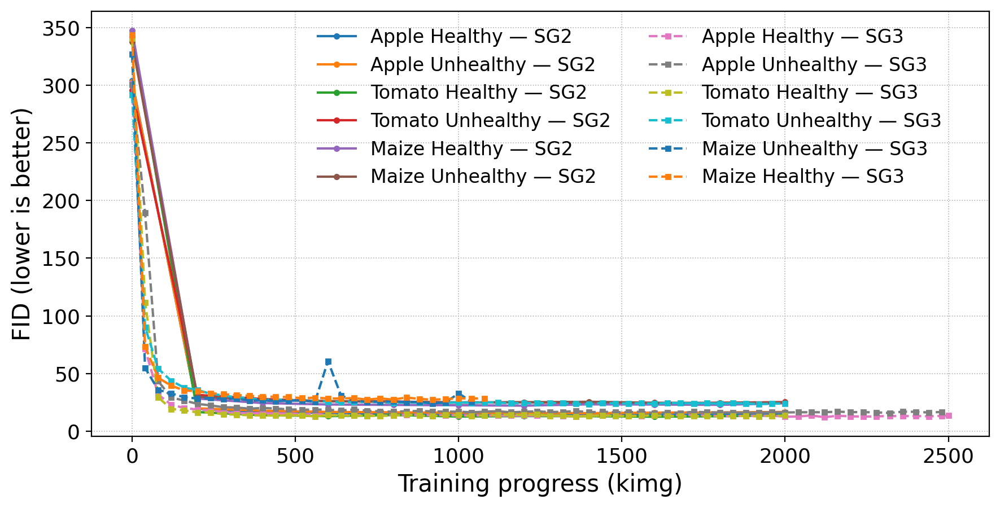
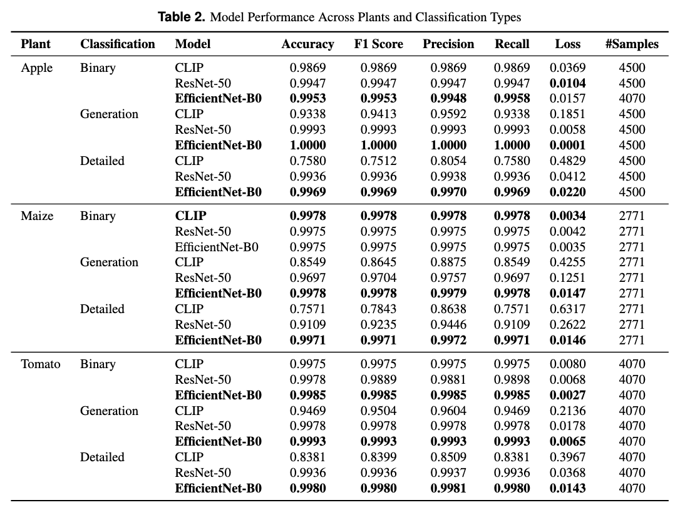

The digital transformation of agriculture has introduced cyber-physical systems in which biological processes are monitored and adjusted through sensory, digital, and vision pipelines. As these systems increasingly rely on artificial intelligence, controlled agriculture environments use leaf images for disease detection and yield estimation, amongst other goals. Images used as input for on-the-farm decision making are exposed to adversarial manipulation and to synthetic images created by new generative models. Prior studies in this domain focused mainly on pixel-level attacks or simple binary detection and offered limited support for identifying the generative source of an image and for handling unseen generators. In this work, we propose a unified detection and attribution framework for agricultural cyber-physical systems. Synthetic concealment and fabrication attack scenarios are created using multiple generative adversarial networks (StyleGAN2, StyleGAN3, R3GAN) and diffusion models (Instruct-Pix2Pix, BLIP-Diffusion, DreamShaper-8) across apple, maize, and tomato imagery. These synthetic samples are used to evaluate three vision classifier architectures: EfficientNet-B0, ResNet-50, and CLIP (ViT-B/32), for binary authenticity classification (Real vs. Synthetic), source identification (Real, GAN, or Diffusion), and detailed plant-health-source attribution. In the in-distribution setting, the convolutional models reach near-saturated performance for the generators and preprocessing conditions present in training, while CLIP performs well on detailed attribution but shows weaker performance on binary authenticity classification. When the models are evaluated on images from generators not seen during training, accuracy drops for source attribution and CLIP shows plant-specific failures. These results demonstrate both the promise and the limits of current generative-image detection methods in controlled agricultural imagery and motivate layered, continuously updated defenses for preserving the integrity of automated agricultural monitoring pipelines.
Results
We evaluate (i) GAN training dynamics and best FID (R3GAN, StyleGAN2-ADA, StyleGAN3), (ii) diffusion image quality, and (iii) classifier performance for binary, source, and detailed attribution — both in-distribution and on the held-out, unseen R3GAN and DreamShaper-8 generators. In-distribution, the CNN baselines (EfficientNet-B0, ResNet-50) reach near-saturated accuracy, while CLIP trails on the imbalanced binary task. On unseen generators, accuracy can drop sharply (e.g., source attribution on maize), revealing a non-trivial generalization gap. Below we show quantitative trends followed by qualitative examples and a summary table.
Quantitative (FID & Training Dynamics)



Qualitative (Real vs Synthetic)

Model Performance Summary
The table below summarizes Accuracy / F1 / Precision / Recall / Loss for CLIP, ResNet-50, and EfficientNet-B0 on Binary, Generation, and Detailed tasks across crops (in-distribution validation splits).
